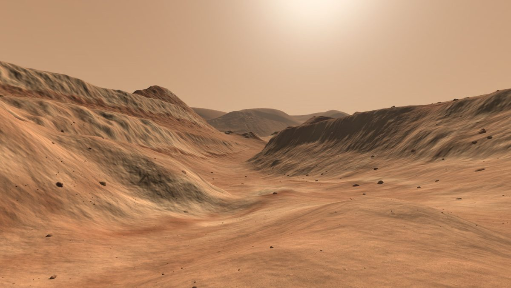
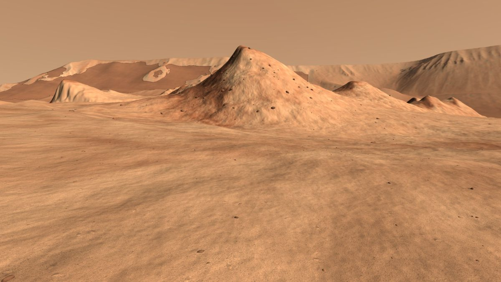
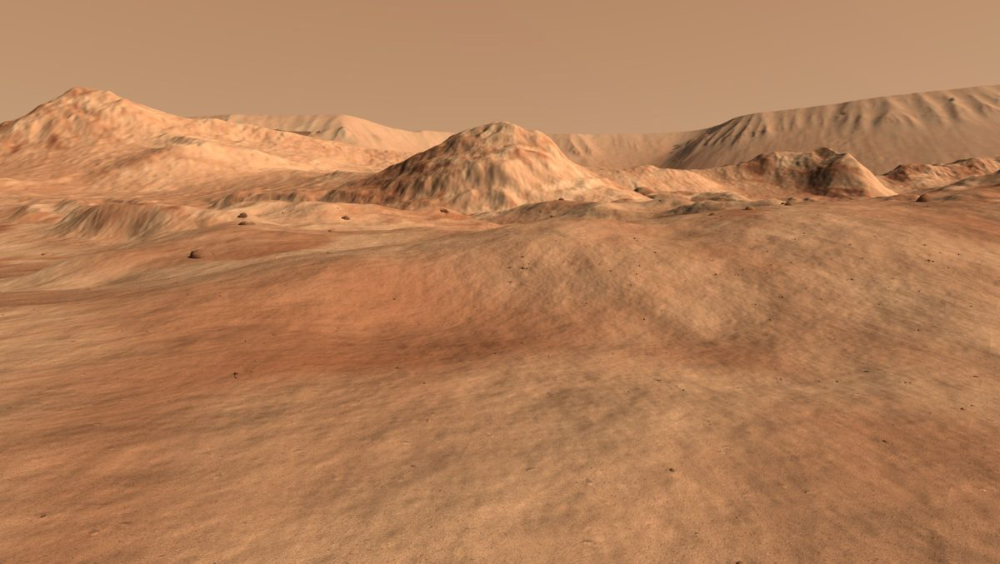

A walk on real Mars terrain, built from HiRISE stereo images.
The walk runs in Chrome, Safari or Firefox on a desktop or laptop, with a keyboard and mouse.



Data: NASA/JPL/University of Arizona (HiRISE), USGS Astrogeology, NASA/JPL/MSSS (CTX), ESA/DLR/FU Berlin (HRSC), NASA/GSFC (MOLA), NASA/JPL-Caltech (InSight), NASA/JPL-Caltech/LANL/CNES/CNRS/ISAE-Supaero (SuperCam audio).